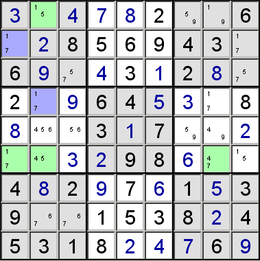

This is a technique that allows you to make eliminations by following a chain of cells that have only two candidates each.
Consider the following puzzle fragment:
|
|
|
(The numbers in curly brackets { } are the only candidates for the cell.)
We can build up an implication chain thus:
if r1c1 = 3 then r1c5 = 7, so r2c6 = 6, so r2c8 = 8, so r3c9 = 1
So we know that either r1c1 is 1, or if r1c1 is 3, then r3c9 must be 1. So any cells that share a unit with both of these cells can have 1 eliminated. These are the cells marked by the asterisks in the above example.
More generally, as long as the same number is "unused" at both ends of the chain, then this technique allows the elimination of that number for any cells that share a unit with both end cells.
Consider the following puzzle:

We can build up the implication chain:
if r1c2 = 5 then r6c2 = 4, and so r6c8 = 7, and so r6c1 = 1.
So we know that either r1c2 is 1, or if r1c2 is 5, then r6c1 must be 1. So any cells that share a unit with both of these cells can have 1 eliminated. These are the blue cells in the above example.
More generally, as long as the same number is "unused" at both ends of the chain, then this technique allows the elimination of that number for any cells that share a unit with both end cells.